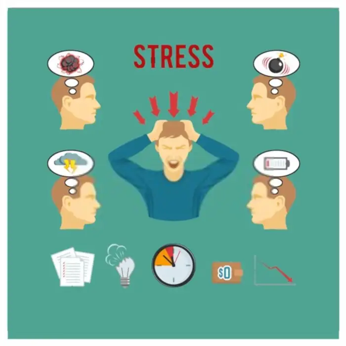
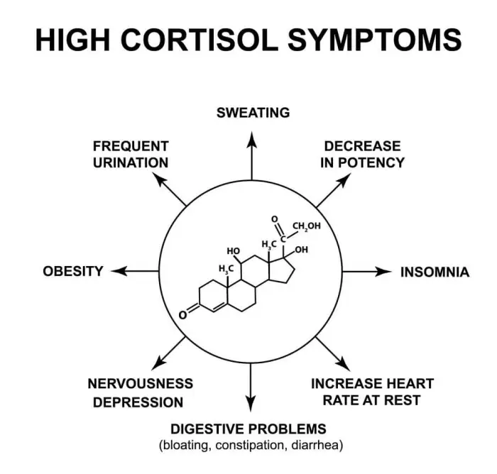
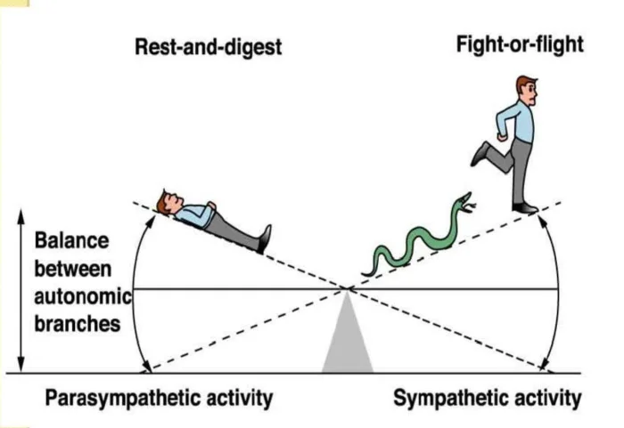
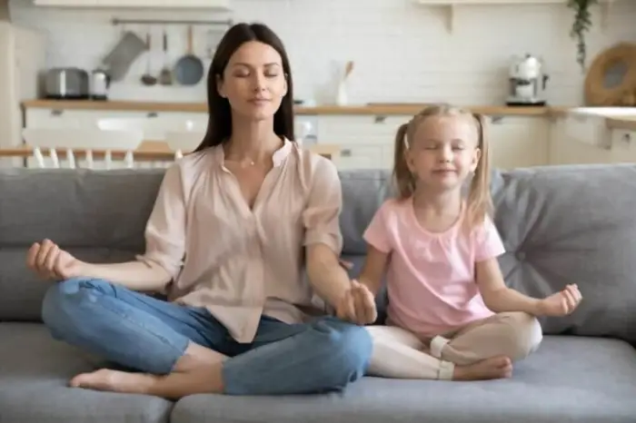
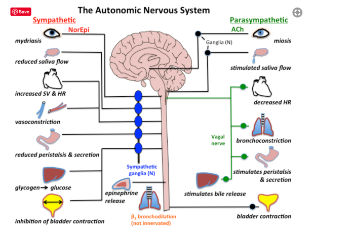
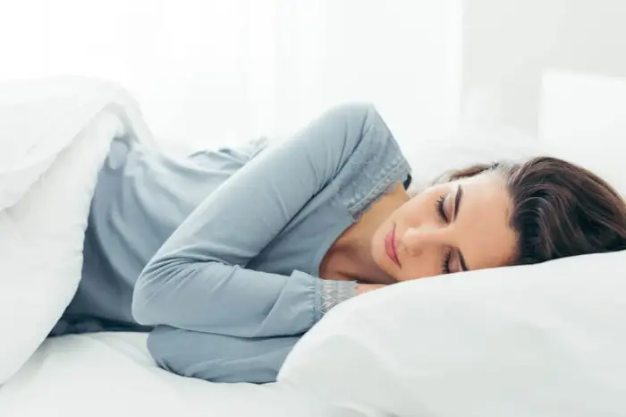
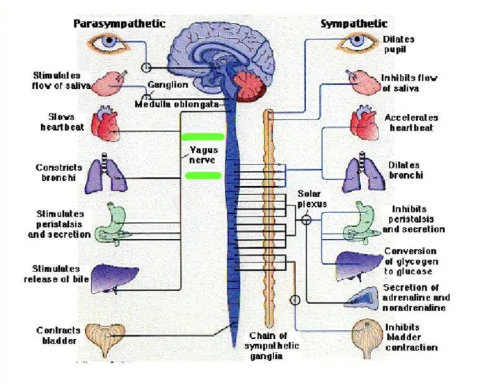

How to Reduce Stress and Sleep Better During Covid-19
Since the Pandemic, most of our schedules, personal lives and sleep have been affected. Entire lifestyles have changed in a few months. A lot of us are struggling with how to reduce stress and sleep better during COVID-19. How about we focus on how to reduce stress first? Then like the domino effect, the sleep will start to get better.
How to Reduce Stress and Sleep Better.

What is Stress? When I was studying, I remember one of my professors mentioning Stress = Time + Limited Space. Back then it did not make any sense until probably I was hit by time pressure and space management. You might be wondering what has space got to do with stress anyways? Well, what I am indicating here is mainly mental space than physical space. If your mind is too occupied with thinking and worrying about so many things going around then, there is no space for you to do the things that really need your attention.When we were growing up our parents and teachers conditioned us by saying, "adulthood is no fun, it is full of stress". It's like we grew up hoping to meet our lifelong friend "stress." Since then, there was stress when we appeared for our exams, when we entered college, when we first started to drive, it followed us when we got our first job or lost our jobs, got sick, COVID-19 etc. Everybody experiences stress differently. I am sure with the above examples you would have nodded your head at least once.
Since stress was introduced to us in that manner we only saw it as something that is harmful to us rather than it is useful sometimes. What is actually harmful is our perception and associating stress with negative experiences. Stress is just a learned response to a stressor or a stressful event. If we start taking stress as something beneficial we will be in a better position to handle it.
How to reduce stress and sleep better?
What happens when we are Stressed?
The reason stress can be beneficial is because it alerts our survival response. It prompts us of any danger. For example, if you were attacked by a snake it is this fight-flight or freezes response that will tell you to react appropriately in order for you to survive. It's meant as a short term acute response for survival only. If a Zebra is chased by a lion while it was grazing, it will escape get somewhere safe and will continue the same action that it was doing before being chased and that is grazing. But, if humans were chased it is likely that we would have wondered what might have happened if the lion had caught us, or worried about if it will still be there.By ruminating we are unconsciously still living in survival mode, the flight fight freeze response mode and that, in turn, is sending signals to the mind to stay alert at all times.
Let's take a closer look .
Now, since we are in survival mode all the time, the brain releases stress hormones called Cortisol. This hormone is produced by the body in any stressful experiences like anger, fear, anxiety etc. This is the time when it actually starts affecting us physically as well because all we are truly doing is releasing cortisol and survival mode now becomes our normal living style.
The human psyche is resistant to change because we attempt to maintain “Homeostasis”, a tendency to keep the current situations as stable as possible by adjusting, compromising, compensating, fooling, etc. It continuously does those things that lead us to survival. Because it is a tried and tested method, the subconscious perceives Stress as "surviving", hence, we keep doing the same old things to survive longer.

Benefits of Stress.
After looking at the characteristics of stress it is safe to say that Stress can be perceived as beneficial for all the above reasons if used and viewed as motivation rather than demotivating.
- It only lasts in the short term
- It energizes and motivates
- It is perceived as something within our coping ability
- It feels exciting
- It increases focus and performance
Healthy Diet : Eat healthy foods. Avoid eating overly greasy or fried food. Greasy and fried foods make us feel heavy and lethargic hence dropping our energy levels. Besides, in the long run, unhealthy food has done no good for anyone. To name a few physiologically, it increases the chances of high cholesterol, high blood pressure etc. Talking of foods, say NO to stimulating drinks like sweetened carbonated beverages (sodas), caffeinated beverages, alcohol etc. and smoking in any form. Not only do these stimulants, alongside focus and attention or presumed relaxation, increase tiredness, fatigue, increases heart rate, disturb the quality of sleep, reduce the immune system, etc. they also affect the production of melatonin, a hormone that is naturally produced by the pineal gland to help us fall asleep.
Exercise : Remember me mentioning that when under stress the brain releases a hormone called Cortisol. To counter stress hormones, the body needs to produce Endorphins that allow us to rest and let go. When we exercise our body induces these happy hormones and Endorphins. Exercising does not have to be intense. It could be as simple as 30 minutes fast walking, 30 mins jogging or running, it could be dancing as I do. As long as that heart rate is increased and burns the cortisol and thereby making us healthier and happier. As per Eco therapy when humans get connected to anything else other than humans like plants, animals, the environment encourages us to find our relationships with others other than humans and hence healing an individual. It works as a stress reliever .
Meditate : Going back to high school biology class. You may remember the abbreviation ANS short for Autonomic Nervous System, which constitutes 2 subsystems. Sympathetic Nervous System and Parasympathetic Nervous System. Each of these subsystems is responsible for certain functions.
- The sympathetic Nervous System is activated during stress or flight fight or freeze response for survival.
- The parasympathetic Nervous System is responsible for rest, relaxation and rebooting.

Stress Relief activities.
When you meditate you are sending signals and activating the Parasympathetic Nervous System to rest relax and reboot in order to manage and reduce stress effectively. It's like routine maintenance for your car.

Hobbies : Remember as kids when we had hobbies or passions that kept us happy go lucky, turns out it is an important factor even as adults. Indulge in any kind of activities that make you happy. Outdoor physical activities like badminton, football, basketball or playing any sport you like releases endorphins that will counter the stress hormones. Humans are social beings. Making time for these activities also gives us a chance to socialize and have some good quality time with friends and family and brings a sense of control back in life.
Indoor activities like reading books, painting, crafts, etc work as self-hypnosis and activate Parasympathetic Nervous System. By involving yourself in stress-relieving activities like these not only are you managing stress better but, you also lead an example for your kids by encouraging them to indulge in these activities thereby training them for effective anger management, and anxiety management and making them and yourself resilient.

Sleep : I am hoping by now you might be understanding what happens in our mind and body when we are under stress. You probably would be able to guess the relation between stress and sleep. Perceiving stress as an enemy and allowing it to be a long term resident makes it difficult for us to reboot and let go. Increased levels of cortisol which is released during stress also affect the production of melatonin, the hormone responsible for sleep. Trying to fall asleep and not being able to maintain a prolonged sleep can get frustrating since our mind is still in survival mode and planning for the next day, week or month. Research shows that prolonged lack of sleep can profoundly impact our mental processing and our risk of serious illness, including cardiovascular disease, cancer, obesity, and diabetes.

But, if we start practising the above stress reliving activities we give permission to our brains to relax. During sleep we allow our body to restart and process the entires day's chaos. Sleep is key to stress management and to an optimally functioning brain and body.
How to manage sleep during stress
- BIG NO to stimulating drinks, alcohol and smoking.
- Do not exercise before bedtime.
- Do not watch television. (affects the production of melatonin)
Tips to sleep better.
Reduce Stress
- Read a book.
- Practice Self-Hypnosis
- Listen to relaxing music.
- Listen to a guided meditation.
- Practice Mindfulness breathing (count 1 - breathe in, 2 - breathe out, 3 - breathe in, 4 - breathe out and so on until 10 and start over from 1)
Quick Tips to Reduce Stress in the workplace:
I can only imagine that if you are working in a corporate environment you will be acknowledging the facts of stress but your inner mind will be saying "So what?" or "How are these stress management tools going to help me when I am in front of the computer screen?". I have got your back. Below are some quick strategies for managing stress effectively. Now that we understand how the above stress relief activities work let's find a supplement and a quicker version for each.
- STOP Technique:
- Follow this 30 Seconds 'STOPP' Technique.
S = Remind yourself the Word 'STOP'. As soon as you notice that your body is reacting to a trigger just snap your fingers and say 'STOP'. By snapping your fingers and saying STOP you are alerting, reminding and telling your mind to STOP "overthinking." You are literally snapping out of the negative loop.
T = Take 3 deep breaths "In and Out". With the first exhale relax your lower body. With the 2nd exhale relax your Front and Back and with the 3rd exhale relax your head, shoulders, neck and entire face. In that way, by following the 3 breath cycle you have relaxed your entire body, which tends to cramp up or tense when in stress. By breathing you are reinforcing and sending signals to your brains to stay calm relax & function better.
O = Observe how with each breath your body listens to the command you send, "to relax". Let the thoughts just be in the background or observe them on a screen like watching some headlines on the news channel.
P = Pulling yourself back and resetting yourself from the Stress. As mentioned earlier by Stopping yourself and breathing and relaxing your body you are activating your parasympathetic nervous system which is responsible for recovery and rest.
P = Put in Perspective. Now when the mind is rebooted "put in Perspective " whether the thoughts are based on EMOTIONS or FACTS. (Emotions change frequently, facts do not.)
In short, all you have to do is snap your fingers and say the words STOP take 3 breaths and with each exhale relax your lower body, relax your middle front and back and then relax your upper body respectively.
- Splash your Face:
- This is a real easy one. And it kills 2 birds with one arrow. Splash your face with cold water, what you are really doing is waking up the Vagus Nerve which is connected with your Parasympathetic Nervous System. This simple technique will tell the vagus nerve to let go and relax thereby rebooting your system. The other benefit of doing this is you are taking 20 to 30 seconds time off from the computer screen which is one of the major reasons that affects the production of melatonin that causes sleep problems.
Strategies for Managing Stress.

- Take a Walk :
- Just like splashing water, this too solves the same purpose. It lets you take a break from the screen. By taking a couple of walks in the office or, during break time, instead of taking the elevator to access the cafeteria use the stairs. This will solve the purpose that you read in the above exercise section. (releases endorphins.)
- Listen to music :
- Listening to music can immediately lift your mood. It releases those happy hormones. It helps us concentrate better and relax. Ongoing research in these areas reveals that music changes both our moods and our brain. This research-based practice is used to elevate positive moods and helps with motivation, stress management, coordination of mind and body, decreasing feelings of isolation, increases social and internal connection. Music improves 3 major abilities like communication/coordination, listening and understanding. (Sounds like the main ingredients for effective communication and conflict management which are frequently used in any healthy working environment).
Professor Suzanne Hanser of Berklee College of Music said that music therapy serves five significant purposes:
- Shifting one’s attention from problems to solutions.
- Offer a rhythmic structure for relaxation and breathing.
- Helping clients visualize positive imagery that evokes pleasure and happiness.
- Helping them achieve a deep state of relaxation.
- Changing mood.
- Mindfulness Eating :
- During your breaks avoid talking to your colleagues about work. Rather focus on the food, see the colour, feel the texture when it touches your tongue, the smell of the food, what does it taste like and the aftertaste. When you chew what kinds of noise does it make crunchy, crispy etc? You are truly using all 5 senses, visual, auditory, feel, taste and smell. The benefits of mindfulness eating and using all your 5 senses are, that it narrows your focus from all the external experience to internal experience thereby leading to self-awareness, gratitude and acceptance. One of the other benefits of mindfulness eating is weight management. When you eat slowly and appreciate every morsel you are inviting in peace and gift yourself "me time" and listen to your mind and body rather than anyone else.
Follow these Quick Tips to Reduce Stress, mix and match them at least every 2 hours to make staying relaxed your new normal and your newfound habit. Summary:
- Stress is not always a bad thing.
- Changing your perception of stress helps us deal with it better.
- Stress is short term.
- Exercise, healthy eating, meditation and quality sleep can help reduce stress.
- Following and practising the exercises and quick tips to reduce stress every 2 hours can help you lead a stress-free life.